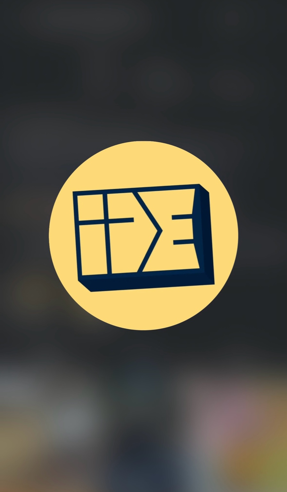
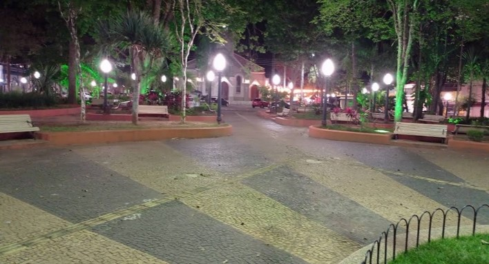
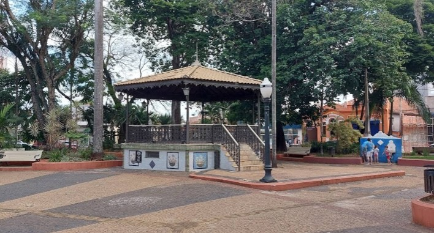

Evangelizar
Anunciar Cristo com clareza, verdade e amor.

IDEMc 16:15 | São Pedro - SP
O IDE é um movimento cristão evangelístico formado por pessoas de diferentes igrejas, unidas para levar Cristo às ruas, praças, lares e onde houver pessoas.
O que é o IDE?
O IDE é um movimento cristão evangelístico formado por pessoas de diferentes igrejas que se uniram por um mesmo propósito: levar o evangelho de Cristo para além das paredes da igreja.
Não somos uma igreja, nem uma denominação. Somos cristãos que entendem que o chamado de Jesus continua vivo: ir até as pessoas, anunciar a verdade, amar, cuidar, servir e apontar para Cristo.
Por que IDE?
O nome IDE nasce do chamado de Jesus em Marcos 16:15. É uma lembrança direta de que a missão não deve ficar guardada dentro de nós.
IDE é sobre sair, alcançar, servir e anunciar Jesus com coragem, amor e verdade. É sobre uma fé que se move até as pessoas.
Nossa missão
A missão do IDE é anunciar Cristo de forma bíblica, prática, humana e verdadeira.
Anunciar Cristo com clareza, verdade e amor.
Olhar para as pessoas como Jesus olhou.
Acolher, ouvir, orar e caminhar junto.
Transformar fé em atitude prática.
Conectar cristãos de diferentes igrejas em uma mesma missão.
O campo é a cidade
A missão não acontece apenas longe. Ela começa aqui: nas ruas, praças, casas, escolas, trabalhos e em cada lugar onde existem pessoas precisando ouvir sobre Jesus.
Como participamos da missão?
O IDE se movimenta através de ações evangelísticas públicas, momentos de louvor, oração, conversas, acolhimento e mobilização de jovens e cristãos de diferentes igrejas.


Quem pode participar?
Todo cristão que deseja servir com humildade, anunciar o evangelho e caminhar em unidade pode participar.
Você não precisa fazer parte de uma igreja específica para estar conosco. O IDE é para aqueles que entendem que a seara é grande e que ainda há muitas pessoas para serem alcançadas.
Próximos acontecimentos
Nossos evangelismos, encontros e ações públicas são divulgados pelo Instagram e pelo grupo do WhatsApp.
Mateus 9:37
Não existe missão pequena quando Cristo é o centro. Se você deseja viver o evangelho com atitude, unidade e propósito, venha caminhar com o IDE.
Quero participar do IDE